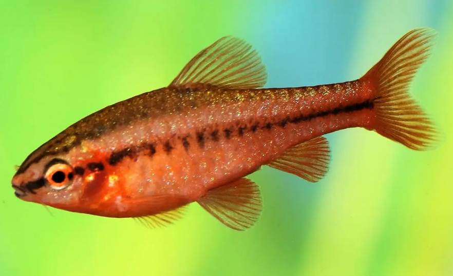

Systématique
- Ordre : Cypriniformes
- Famille : Cyprinidae
- Genre : Puntius
- Espèce : P. titteya
- Syn. : Barbus titteya, Capoeta titteya
- Groupe : Barbus

Puntius titteya, le Barbus cerise, est une petite espèce endémique du Sri Lanka, très populaire en aquariophilie pour sa coloration rouge intense et son tempérament paisible.
Contrairement à beaucoup de "Barbus" qui sont trapus, il possède un corps relativement élancé et fusiforme. Il reste petit, ne dépassant généralement pas 4,5 à 5 cm. Les mâles matures développent une magnifique couleur rouge cerise (parfois presque pourpre) sur tout le corps, tandis que les femelles arborent des teintes plus cuivrées ou brunâtres avec des reflets dorés.
C'est l'un des Cyprinidés les plus calmes, ce qui en fait un candidat idéal pour les aquariums communautaires plantés.
C'est un poisson grégaire qui doit être maintenu en groupe (banc) d'au moins 6 à 8 individus, idéalement avec plus de femelles que de mâles pour disperser l'ardeur de ces derniers.
À la différence du Barbus de Sumatra (Puntigrus tetrazona), le Barbus cerise est très paisible et n'a pas tendance à mordiller les nageoires. Les mâles passent beaucoup de temps à parader entre eux en déployant leurs nageoires pour impressionner les femelles, mais ces joutes restent inoffensives. Il occupe principalement la partie inférieure et médiane du bac.
Mode : ovipare.
C'est un diffuseur d'œufs. La ponte a souvent lieu le matin après un changement d'eau fraîche. Le mâle enlace la femelle qui expulse les œufs parmi la végétation fine (mousse de Java).
Les œufs sont adhésifs. Il n'y a pas de soins parentaux ; les adultes mangent leurs propres œufs s'ils les trouvent. Les alevins éclosent en 24 à 48 heures.
Dimorphisme sexuel : Très marqué à l'âge adulte. Le mâle est plus petit, plus svelte et surtout d'un rouge intense. La femelle est plus ronde, plus grande et de couleur beige à brune, avec souvent une ligne latérale sombre bien visible.
Espérance de vie : Environ 4 à 6 ans en captivité.
Il est endémique du Sri Lanka (zones humides du sud-ouest). Il vit dans les ruisseaux forestiers ombragés à courant lent, dont le fond est couvert de limon et de feuilles mortes. L'eau y est souvent douce et légèrement acide.
Répartition

Origine naturelle :
- Sri Lanka (bassin des rivières Kelani et Nilwala).
- Introduit dans d'autres pays tropicaux (Mexique, Colombie).
Paramètres de maintenance
Température : 23 à 27 °C.
pH : 6,0 à 7,5 (tolérant, mais préfère l'eau légèrement acide à neutre).
GH : 5 à 15 °dGH.
Courant : Faible à modéré.
Volume conseillé : Minimum 60 à 80 L pour un petit groupe. Il a besoin d'espace de nage malgré sa petite taille, mais apprécie un bac densément planté pour se cacher.
Régime alimentaire
Régime : omnivore.
Dans la nature, il se nourrit d'algues, de détritus, de diatomées et de petits insectes (larves de diptères).
En aquarium, il est peu difficile : paillettes, granulés, nourriture vivante ou congelée (daphnies, artémias). Une part végétale (spiruline, courgette pochée) est recommandée pour sa santé.